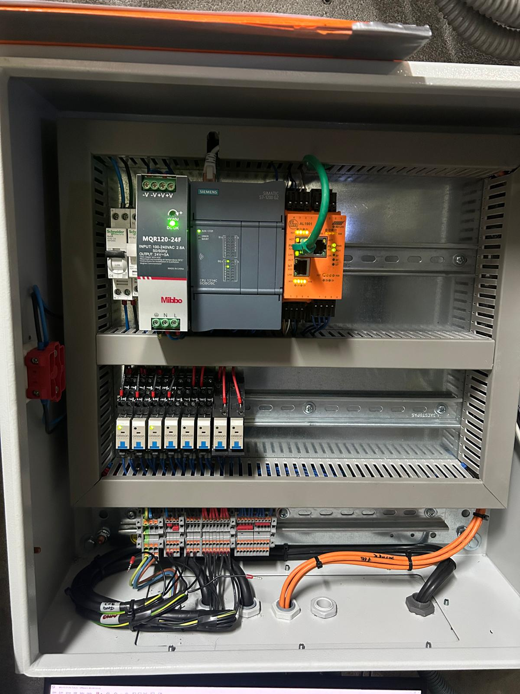
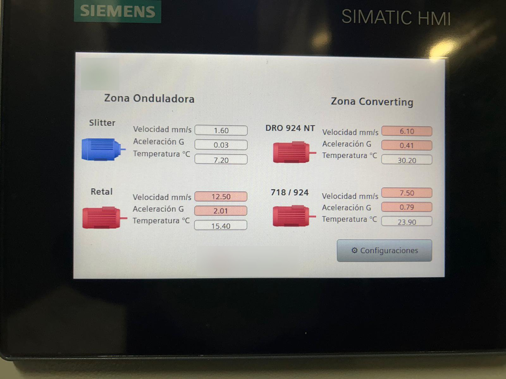
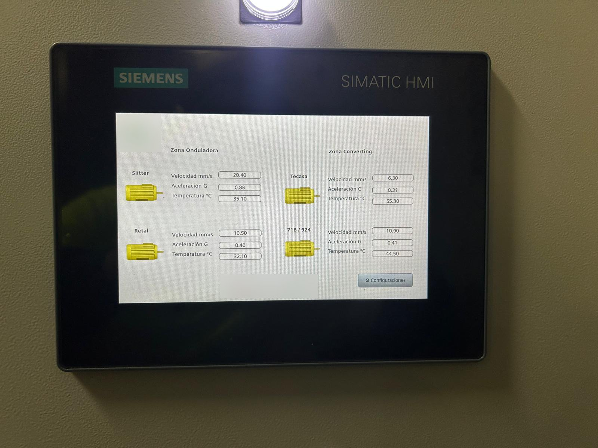
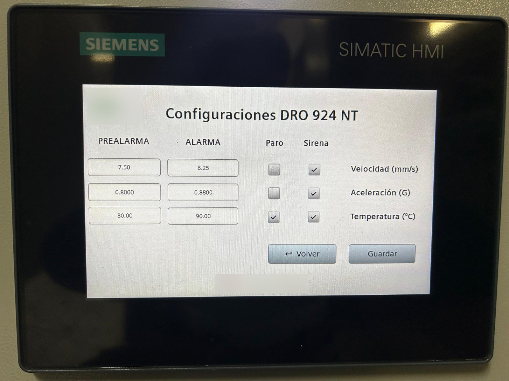
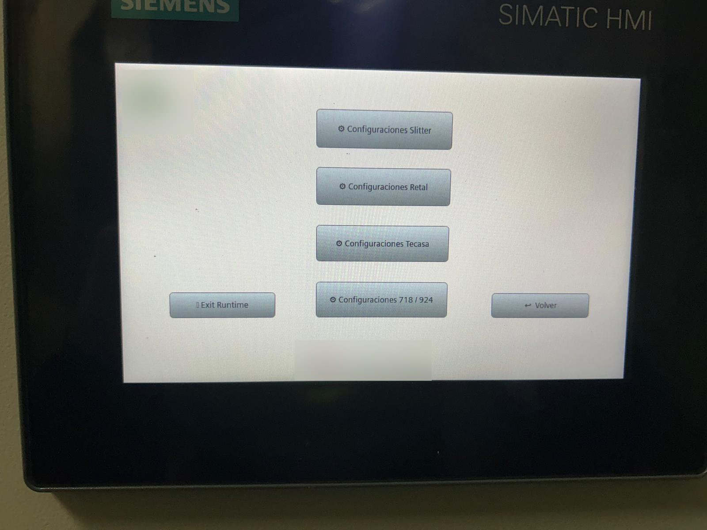

Real industrial hardware — production environment
Hardware industrial real — entorno de producción
The system monitors vibration and temperature of four industrial motors in real time. Each motor is equipped with an IFM VVB306 IO-Link sensor measuring velocity (mm/s RMS), acceleration (g peak), and temperature (°C). The sensors connect to an IFM AL1901 IO-Link master, which communicates with a Siemens S7-1200 CPU 1214C DC/DC/DC via PROFINET. A Siemens MTP700 Unified Basic HMI provides operator interaction directly on the shop floor.
The operator can configure pre-alarm and alarm thresholds individually for each motor — velocity, acceleration, and temperature — directly from the HMI settings screen, protected by PIN authentication. Configuration changes are saved to retentive data blocks via a state machine (FB_Save_Parameters), ensuring parameters survive power cycles. The main screen displays live readings for all four motors grouped by production zone.
Visual alarm logic: Motors in normal state display in blue with white value fields. A pre-alarm turns the motor icon yellow and highlights the specific parameter field that triggered it, so the operator immediately knows which measurement exceeded the threshold. An alarm turns the motor icon red with the critical field highlighted in red. A visible pre-alarm LED output activates on the control panel.
Alarm response logic: On alarm, a zone-specific siren activates and a motor stop output can be enabled per motor configuration. An authenticated operator can permanently silence the alarm. An operator without full access can silence temporarily — the siren resumes after one hour if the fault has not been resolved. The output only re-enables after the root cause is cleared, preventing inadvertent restart.
El sistema monitoriza vibración y temperatura de cuatro motores industriales en tiempo real. Cada motor dispone de un sensor IFM VVB306 IO-Link que mide velocidad (mm/s RMS), aceleración (g pico) y temperatura (°C). Los sensores se conectan a un maestro IO-Link IFM AL1901, que se comunica con un Siemens S7-1200 CPU 1214C DC/DC/DC mediante PROFINET. Una HMI Siemens MTP700 Unified Basic permite la interacción del operario directamente en planta.
El operario puede configurar individualmente los umbrales de prealarma y alarma para cada motor — velocidad, aceleración y temperatura — desde la pantalla de configuración de la HMI, protegida por autenticación PIN. Los cambios se guardan en bloques de datos retentivos mediante una máquina de estados (FB_Save_Parameters), asegurando que los parámetros sobreviven ciclos de alimentación. La pantalla principal muestra lecturas en tiempo real de los cuatro motores agrupados por zona de producción.
Lógica de alarma visual: Los motores en estado normal se muestran en azul con campos de valor en blanco. Una prealarma pone el icono del motor en amarillo y resalta el campo del parámetro específico que la activó, para que el operario identifique inmediatamente qué medición superó el umbral. Una alarma pone el motor en rojo con el campo crítico resaltado en rojo.
Lógica de respuesta a alarma: En alarma, se activa una sirena por zona y se puede habilitar la parada del motor por configuración. Un operario autenticado puede silenciar permanentemente. Sin acceso completo, el silenciamiento es temporal — la sirena reanuda tras una hora si el fallo no se ha resuelto. La salida solo se reactiva tras solucionar la causa raíz.


Slitter · Retal
DRO 924 NT · 718/924
Slitter · Retal
DRO 924 NT · 718/924
a-Peak (G)
Temperature (°C)
■ Pre-alarm — yellowPrealarma — amarillo
■ Alarm — redAlarma — rojo
Standard: 1 h temp.
Output clears on fix
Estándar: 1 h temp.
Salida se libera al resolver





CPU 1214C DC/DC/DC
Unified Basic
PROFINET GSD device
v-RMS · a-Peak · Temp
192.168.0.x
Ladder · SCL · FBD